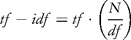
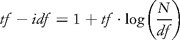

Digital Humanities, like most fields of scholarly inquiry, constituted itself through a long accretion of revolutionary insight, territorial rivalry, paradigmatic rupture, and social convergence. But the field is unusual in that it can point both to a founder and to a moment of creation. The founder is Roberto Busa, an Italian Jesuit priest who in the late 1940s undertook the production of an automatically generated concordance to the works of St. Thomas Aquinas using a computer. The founding moment was the creation of a radically transformed, reordered, disassembled and reassembled version of one of the world's most influential philosophies:
00596 in veniale peccatum non cadat; ut sic hoc verbum habemus non determinatum, sed confusum praesens importet
-003(3SN)3.3.2.b.ex/56
00597 intellegit profectum scientiae christi quantum ad experientiam secundum novam conversionem ad sensibile praesens,
-S-003(3SN)14.1.3e.ra4/4
00598 ita quot apprehenditur ut possibile adipisce, aprehenditur ut jam quodammodo praesens: et ideo spec delectationem
-003(3SN)26.1.2.ra3/8
00599 operationibus: quia illud quod certudinaliter quasi praesens tenemus per intel-lectum, dicimur sentire, vel videre;
-003(3Sn)26.1.5.co/11 (Index 65129)
Undertaking such transformations for the purpose of humanistic inquiry would eventually come to be called "text analysis," and in literary study, computational text analysis has been used to study problems related to style and authorship for nearly sixty years. As the field has matured, it has incorporated elements of some of the most advanced forms of technical endeavor, including natural language processing, statistical computing, corpus linguistics, and artificial intelligence. It is easily the most quantitative approach to the study of literature, the oldest form of digital literary study, and, in the opinion of many, the most scientific form of literary investigation.
But "algorithmic criticism" — criticism prompted by the algorithmic manipulation of literary texts — either does not exist, or exists only in nascent form. The digital revolution, for all its wonders, has not penetrated the core activity of literary studies, which, despite numerous revolutions of a more epistemological nature, remains mostly concerned with the interpretive analysis of written cultural artifacts. Texts are browsed, searched, and disseminated by all but the most hardened Luddites in literary study, but seldom are they transformed algorithmically as a means of gaining entry to the deliberately and self-consciously subjective act of critical interpretation. Even text analysis practitioners avoid bringing the hermeneutical freedom of criticism to the "outputted" text. Bold statements, strong readings, and broad generalizations (to say nothing of radical misreadings, anarchic accusations, agonistic paratextual revolts) are rare, if not entirely absent from the literature of the field, where the emphasis is far more often placed on methodology and the limitations it imposes.
It is perhaps not surprising that text analysis would begin this way. Busa's own revolution was firmly rooted in the philological traditions to which modern criticism was largely a reaction. Reflecting on the creation of the Index some forty years after the fact, Busa offered the following motivations:
I realized first that a philological and lexicographical inquiry into the verbal system of an author has to precede and prepare for a doctrinal interpretation of his works. Each writer expresses his conceptual system in and through his verbal system, with the consequence that the reader who masters this verbal system, using his own conceptual system, has to get an insight into the writer's conceptual system. The reader should not simply attach to the words he reads the significance they have in his mind, but should try to find out what significance they had in the author's mind.
(Annals 83)
Such ideas would not have seemed unusual to nineteenth-century biblical scholars for whom meaning was something both knowable and recoverable through careful, scientific analysis of language, genre, textual recension, and historical context. Nor would it, with some rephrasing, have been a radical proposition either for Thomas himself or for the Dominican Friars who had produced the first concordance (to the Vulgate) in the thirteenth century. We do no injustice to Busa's achievement in noting, however, that the contemporary critical ethos regards Busa's central methodological tenets as grossly naive. Modern criticism, entirely skeptical of authorial intention as a normative principle and linguistic meaning as a stable entity, has largely abandoned the idea that we could ever keep from reading ourselves into the reading of an author and is, for the most part, no longer concerned with attempting to avoid this conundrum.
But even in Busa's project, with its atomized fragmentation of a divine text, we can discern the enormous liberating power of the computer moving against the sureness of philology. In the original formation of Thomas's text, "presence" was a vague leitmotif. But on page 65129 of the algorithmically transformed text, "presence" is that toward which every formation tends, the central feature of every utterance, and the pattern that orders all that surrounds it. We encounter "ut sic hoc" and "ut possibile," but the transformed text does not permit us to complete those thoughts. Even Busa would have had to concede that the effect is not the immediate apprehension of knowledge, but instead what the Russian Formalists called ostranenie — the estrangement and defamiliarization of textuality. One might suppose that being able to see texts in such strange and unfamiliar ways would give such procedures an important place in the critical revolution the Russian Formalists ignited; which is to say, the movement that ultimately gave rise to the ideas that would supplant Busa's own hermeneutics.
But text analysis would take a much more conservative path. Again and again in the literature of text analysis, we see a movement back toward the hermeneutics of Busa, with the analogy of science being put forth as the highest aspiration of digital literary study. For Roseanne Potter, writing in the late 1980s, "the principled use of technology and criticism" necessarily entailed criticism becoming "absolutely comfortable with scientific methods" (Potter 1988: 91–2). Her hope, shared by many in the field, was that the crossover might create a criticism "suffused with humanistic values," but there was never a suggestion that the "scientific methods" of algorithmic manipulation might need to establish comfort with the humanities. After all, it was the humanities that required deliverance from the bitter malady that had overtaken modern criticism:
In our own day, professors of literature indulge in what John Ellis (1974) somewhat mockingly called "wise eclecticism" — a general tendency to believe that if you can compose an interesting argument to support a position, any well-argued assertion is as valid as the next one. A scientific literary criticism would not permit some of the most widespread of literary critical practices.
(Potter 1998: 93)
Those not openly engaged in the hermeneutics of "anything goes" — historicists old or new — were presented with the settling logic of truth and falsehood proposed by computational analysis:
This is not to deny the historical, social, and cultural context of literature (Bakhtin, 1981), and of language itself (Halliday, 1978). Nor can one overlook the very rich and subtle elaborations of literary theory in the forty years since Barthes published Le degre zero de l'ecriture (1953). In point of fact, most of these elaborations have the technical status of hypothesis, since they have not been confirmed empirically in terms of the data which they propose to describe — literary texts. This is where computer techniques and computer data come into their own.
(Fortier 1993: 376)
Susan Hockey, in a book intended not only to survey the field of humanities computing, but to "explain the intellectual rationale for electronic text technology in the humanities," later offered a vision of the role of the computer in literary study to which most contemporary text analysis practitioners fully subscribe:
Computers can assist with the study of literature in a variety of ways, some more successful than others. […] Computer-based tools are especially good for comparative work, and here some simple statistical tools can help to reinforce the interpretation of the material. These studies are particularly suitable for testing hypotheses or for verifying intuition. They can provide concrete evidence to support or refute hypotheses or interpretations which have in the past been based on human reading and the somewhat serendipitous noting of interesting features.
(Hockey 2000: 66)
It is not difficult to see why a contemporary criticism temperamentally and philosophically committed to intuition and serendipity would choose to ignore the corrective tendencies of the computer against the deficiencies of "human reading." Text analysis arises to assist the critic, but only if the critic agrees to operate within the regime of scientific methodology with its "refutations" of hypotheses.
The procedure that Busa used to transform Thomas into an alternative vision is, like most text analytical procedures, algorithmic in the strictest sense. If science has repeatedly suggested itself as the most appropriate metaphor, it is undoubtedly because such algorithms are embedded in activities that appear to have the character of experiment. Busa, in the first instance, had formed a hypothesis concerning the importance of certain concepts in the work. He then sought to determine the parameters (in the form of suitable definitions and abstractions) for an experiment that could adjudicate the viability of this hypothesis. The experiment moved through the target environment (the text) with the inexorability of a scientific instrument creating observable effects at every turn. The observations were then used to confirm the hypothesis with which he began.
Some literary critical problems clearly find comfort within such a framework. Authorship attribution, for example, seeks definitive answers to empirical questions concerning whether a work is by a particular author or not, and programs designed to adjudicate such questions can often be organized scientifically with hypotheses, control groups, validation routines, and reproducible methods. The same is true for any text analysis procedure that endeavors to expose the bare empirical facts of a text (often a necessary prelude to textual criticism and analytical bibliography). Hermeneutically, such investigations rely upon a variety of philosophical positivism in which the accumulation of verified, falsifiable facts forms the basis for interpretive judgment. In these particular discursive fields, the veracity of statements like "The tenth letter of The Federalist was written by James Madison," or, "The 1597 quarto edition of Romeo and Juliet is a memorial reconstruction of the play" are understood to hinge more or less entirely on the support of concrete textual evidence. One might challenge the interpretation of the facts, or even the factual nature of the evidence, but from a rhetorical standpoint, facts are what permit or deny judgment.
For most forms of critical endeavor, however, appeals to "the facts" prove far less useful. Consider, for example, Miriam Wallace's discussion of subjectivity in Virginia Woolf's novel The Waves:
In this essay I want to resituate The Waves as complexly formulating and reformulating subjectivity through its playful formal style and elision of corporeal materiality. The Waves models an alternative subjectivity that exceeds the dominant (white, male, heterosexual) individual western subject through its stylistic usage of metaphor and metonymy. […] Focusing on the narrative construction of subjectivity reveals the pertinence of The Waves for current feminist reconfigurations of the feminine subject. This focus links the novel's visionary limitations to the historic moment of Modernism.
(Wallace 2000: 295–6)
Wallace frames her discourse as a "resituation" of Woolf's novel within several larger fields of critical discourse. This will presumably involve the marshaling of evidence and the annunciation of claims. It may even involve offering various "facts" in support of her conclusions. But hermeneutically, literary critical arguments of this sort do not stand in the same relationship to facts, claims, and evidence as the more empirical forms of inquiry. There is no experiment that can verify the idea that Woolf's "playful formal style" reformulates subjectivity or that her "elision of corporeal materiality" exceeds the dominant western subject. There is no control group that can contain "current feminist reconfigurations." And surely, there is no metric by which we may quantify "pertinence" either for Woolf or for the author's own judgment.
The hermeneutical implications of these absences invoke ancient suspicions toward rhetoric, and in particular, toward the rhetorical office of inventio: the sophistic process of seeking truth through "the dialectical interplay of trust, emotion, logic, and tradition which has, since the seventeenth century, contended with the promises of empiricism" (Bold 1988: 543–4). In some sense, humanistic discourse seems to lacks methodology; it cannot describe the ground rules of engagement, the precise means of verification, or even the parameters of its subject matter. Still, as Gadamer pointed out in Truth and Method:
The hermeneutic phenomenon is basically not a problem of method at all. It is not concerned with a method of understanding by means of which texts are subjected to scientific investigation like all other objects of experience. It is not concerned primarily with amassing verified knowledge, such as would satisfy the methodological ideal of science — yet it too is concerned with knowledge and with truth. In understanding tradition not only are texts understood, but insights are acquired and truths known. But what kind of knowledge and what kind of truth? (1996: 544)
Though Gadamer's question is not easily answered, we may say that from a purely cultural standpoint, literary criticism operates at a register in which understanding, knowledge, and truth occur outside of the narrower denotative realm in which scientific statements are made. It is not merely the case that literary criticism is concerned with something other than the amassing of verified knowledge. Literary criticism operates within a hermeneutical framework in which the specifically scientific meaning of fact, metric, verification, and evidence simply do not apply. The "facts" of Woolf — however we choose to construe this term — are not the principal objects of study in literary criticism. "Evidence" stands as a metaphor for the delicate building blocks of rhetorical persuasion. We "measure" (as in prosody) only to establish webs of interrelation and influence. "Verification" occurs in a social community of scholars whose agreement or disagreement is almost never put forth without qualification.
All of this leaves the project of text analysis in a difficult position. For even if we are willing to concede the general utility of computational methods for the project of humanistic inquiry, we must nonetheless contend with a fundamental disjunction between literary critical method and computational method. The logic that underlies computation, though not scientific in the strict sense of the term, conforms easily to the methodologies of science. Computers are, as Hockey noted, good at counting, measuring, and (in a limited sense) verifying data, and we judge the tractability of data by the degree to which it can be made to conform to these requirements. When it comes to literary criticism, however, we find that the "data" is almost entirely intractable from the standpoint of the computational rubric.
Paper-based textual artifacts must either be transformed from a continuous field into some more quantized form (i.e., digitized), or else accompanied, as in the case of markup, with an elaborate scaffolding by which the vagaries of continuity can be flattened and consistently recorded. We accept the compromises inherent in such transformations in order to reap the benefits of speed, automation, and scale that computational representations afford, but the situation is considerably more complicated in the case of the analysis that is undertaken with these objects. Not a single statement in Wallace's précis, and indeed, very few of the statements one encounters in literary critical discourse, can be treated in this way. No extant computer can draw the conclusions that Wallace does by analyzing the links between "the novel's visionary limitations" and "the historic moment of Modernism" — particularly since the Modernism being invoked here is not a matter of shifting consumer prices or birth statistics. Literary critical interpretation is not just a qualitative matter, but an insistently subjective manner of engagement.
Given the essential properties of computation, we might conclude that text analysis is precisely designed to frame literary critical problems in terms of something analogous to consumer prices and birth statistics, and in general, text analysis has chosen low-level linguistic phenomena as its primary object of study. Doing so would seem to demand that we assume the methodological posture of computational linguistics, with its (entirely appropriate) claims toward scientific rigor. According to this hermeneutical vision, text analysis is simply incapable of forming the sorts of conclusions that lie outside of a relatively narrow range of propositions.
It is not at all uncommon to encounter explicit statements of such interpretive limitation in text analytical scholarship. John Burrows and Hugo Craig's use of principle component analysis for comparing Romantic and Renaissance tragedy — a masterful work of text-analytical scholarship by any measure — is typical in the way it commits itself to an essentially scientific vision of permissible conclusion. The goal of the study is to elucidate the stylistic differences between the two periods of drama —one widely considered to have produced some of the greatest works in English, and another that is almost universally regarded as one of the low points of English literary drama. They draw a number of conclusions from their use of sophisticated statistical clustering methods, but in the end, they confidently state that the sort of insight offered by George Steiner, who felt that the loss of a "redemptive world-view" had rendered Romantic tragedy an impossibility, is "well beyond the ambit of present computational stylistics" (Burrows and Craig 1994: 64).
For an algorithmic criticism to emerge, it would have to come to a philosophical decision concerning statements like these. But the question is less about agreement or disagreement, and more about a willingness to inquire into the hermeneutical foundations that make such statements seem necessary. The computer is certainly incapable of offering "the shift to a redemptive world-view" as a solution to the problem at hand; it is wholly incapable of inferring this from the data. But is it likewise the case that computational results — the data and visualizations that the computer generates when it seeks to quantize and measure textual phenomena — cannot be used to engage in the sort of discussion that might lead one to such a conclusion?
It is useful to put the question this way, because in doing so we refocus the hermeneutical problem away from the nature and limits of computation (which is mostly a matter of methodology) and move it toward consideration of the nature of the discourse in which text analysis bids participation. Burrows and Craig's statement of limitation is valid if we consider computational stylistics to be essentially a scientific pursuit, because within this hermeneutical framework, it makes sense to frame conclusions in terms of what the data allows. But in literary criticism — and here I am thinking of ordinary "paper based" literary criticism — conclusions are evaluated not in terms of what propositions the data allows, but in terms of the nature and depth of the discussions that result. The scientist is right to say that the plural of anecdote is not data, but in literary criticism, an abundance of anecdote is precisely what allows discussion and debate to move forward.
Wallace's essay concerns what many consider to be Virginia Woolf's most experimental work. The novel consists of a series of monologues that trace the lives of six friends from early childhood to old age, with each monologue (beginning always with "Susan said" or "Bernard said") telling the characters' stories at seven distinct stages of their lives. Yet "story" is far too strong a word for their ruminations. The characters recount only a few of the sorts of events one would expect to see forming the basis of plot in a conventional narrative. They speak about different things and have different perspectives on the world, but they employ roughly the same manner of speaking, and do so from childhood to adulthood — employing, as one critic puts it, "the same kind of sentence rhythms and similar kinds of image patterns" throughout (Rosenthal 1979: 144). Some critics have suggested that there are differences that lie along the axis of gender or along a rift separating the more social characters from the more solitary ones, but in the end, one has the sense of an overall unity running against the perspectival conceit that frames the narrative.
It is natural for a Modernist critic to pursue patterns of difference amid this apparent unity, in part because, as Wallace points out, subjectivity is a major concern for "the historic moment of Modernism." Are Woolf's individuated characters to be understood as six sides of an individual consciousness (six modalities of an idealized Modernist self ?), or are we meant to read against the fiction of unity that Woolf has created by having each of those modalities assume the same stylistic voice?
It is tempting for the text analysis practitioner to view this as a problem to be solved —as if the question was rhetorically equivalent to "Who wrote Federalist 10?" The category error arises because we mistake questions about the properties of objects with questions about the phenomenal experience of observers. We may say that Woolf 's novel "is" something or that it "does" something, but what we mean to capture is some far less concrete interpretive possibility connected with the experience of reading. We may ask "What does it mean?" but in the context of critical discourse this is often an elliptical way of saying "Can I interpret (or read) it this way?" It is reasonable to imagine tools that can adjudicate questions about the properties of objects. Tools that can adjudicate the hermeneutical parameters of human reading experiences — tools that can tell you whether an interpretation is permissible — stretch considerably beyond the most ambitious fantasies of artificial intelligence. Calling computational tools "limited" because they cannot do this makes it sound as if they might one day evolve this capability, but it is not clear that human intelligence can make this determination objectively or consistently. We read and interpret, and we urge others to accept our readings and interpretations. When we strike upon a reading or interpretation so unambiguous as to remove the hermeneutical questions that arise, we cease referring to the activity as reading and interpretation. We may even come to refer to it as the annunciation of fact.
If text analysis is to participate in literary critical endeavor in some manner beyond fact-checking, it must endeavor to assist the critic in the unfolding of interpretive possibilities. We might say that its purpose should be to generate further "evidence," though we do well to bracket the association that term holds in the context of less methodologically certain pursuits. The evidence we seek is not definitive, but suggestive of grander arguments and schemes. The "problem" (to bracket another term) with Woolf's novel is that despite evidence of a unified style, one suspects that we can read and interpret the novel using a set of underlying distinctions. We can uncover those distinctions by reading carefully. We can also uncover them using a computer.
It is possible — and indeed, an easy matter — to use a computer to transform Woolf 's novel into lists of tokens in which each list represents the words spoken by the characters ordered from most distinctive to least distinctive term. Tf - idf, one of the classic formulas from information retrieval, endeavors to generate lists of distinctive terms for each document in a corpus. We might therefore conceive of Woolf's novel as a "corpus" of separate documents (each speaker's monologue representing a separate document), and use the formula to factor the presence of a word in a particular speaker's vocabulary against the presence of that word in the other speakers' vocabularies.
Criticism drifts into the language of mathematics. Let tf equal the number of times a word occurs within a single document. So, for example, if the word "a" occurred 194 times in one of the speakers in The Waves, the value of tf would be 194. A term frequency list is therefore the set of tf values for each term within that speaker's vocabulary. Such lists are not without utility for certain applications, but they tend to follows patterns that are of limited usefulness for our purposes. Since the highest frequency terms in a given document are almost always particles ("the" can account for as much as seven percent of a corpus vocabulary), and the lower-frequency words are almost always single-instance words (or "hapax legomena," as they are referred to in the field), we often end up with a list of words that is better at demonstrating the general properties of word distribution in a natural language than it is at showing us the distinctive vocabulary of an author.
If, however, we modulate the term frequency based on how ubiquitous the term is in the overall set of speakers, we can diminish the importance of terms that occur widely in the other speakers (like particles), and raise the importance of terms that are peculiar to a speaker. Tf - idf accomplishes this using the notion of an inverse document frequency:

Let N equal the total number of documents and let df equal the number of documents in which the target term appears. We have six speakers. If the term occurs only in one speaker, we multiply tf by six over one; if it occurs in all speakers, we multiply it by six over six. Thus, a word that occurs 194 times, but in all documents, is multiplied by a factor of one (six over six). A word that occurs in one document, but nowhere else, is multiplied by a factor of six (six over one).
Here are the first twenty-five lines of output from a program designed to apply the tf - idf formula to the character of Louis.1 In addition to providing the weighted scores, the program also generates the number of times Louis uses the term:
Table 26 .1 First twenty-five terms (with tf — idf weights) for the character Louis in Virginia Woolf's The Waves.
| Weight | Term |
|---|---|
| 5.917438 | mr |
| 5.7286577 | western |
| 5.5176187 | nile |
| 5.0021615 | australian |
| 5.0021615 | beast |
| 5.0021615 | grained |
| 5.0021615 | thou |
| 5.0021615 | wilt |
| 4.675485 | pitchers |
| 4.675485 | steel |
| 4.2756658 | attempt |
| 4.2756658 | average |
| 4.2756658 | clerks |
| 4.2756658 | disorder |
| 3.9164972 | accent |
| 3.7602086 | beaten |
| 3.7602086 | bobbing |
| 3.7602086 | custard |
| 3.7602086 | discord |
| 3.7602086 | eating-shop |
| 3.7602086 | england |
| 3.7602086 | eyres |
| 3.7602086 | four-thirty |
| 3.7602086 | ham |
| 3.7602086 | lesson |
Few students of The Waves would fail to see some emergence of pattern in this list. Many have noted that Louis seems obsessed with Egypt and the Nile. The list indicates that such terms are indeed distinctive to Louis, but the second most distinctive term in his vocabulary is the word "western." Louis is also very conscious of his accent and his nationality (he's Australian; all the other characters are English), and yet the fact that "accent" is a distinctive term for Louis would seem to indicate that the other characters aren't similarly concerned with the way he talks. Further analysis revealed that only one other character (Neville) mentions it. Louis is likewise the only character in the novel to speak of "England."
Similar convergences appear in the other lists:
Table 26 .2 First twenty-four terms for all characters in The Waves.
| Bernard | Louis | Neville | |||
|---|---|---|---|---|---|
| thinks | rabbit | mr | clerks | catullus | loads |
| letter | tick | western | disorder | doomed | mallet |
| curiosity | tooth | nile | accent | immitigable | marvel |
| moffat | arrive | australian | beaten | papers | shoots |
| final | bandaged | beast | bobbing | bookcase | squirting |
| important | bowled | grained | custard | bored | waits |
| low | brushed | thou | discord | camel | stair |
| simple | buzzing | wilt | eating-shop | detect | abject |
| canopy | complex | pitchers | england | expose | admirable |
| getting | concrete | steel | eyres | hubbub | ajax |
| hoot | deeply | attempt | four-thirty | incredible | aloud |
| hums | detachment | average | ham | lack | bath |
| Jinny | Rhoda | Susan | |||
|---|---|---|---|---|---|
| prepared | coach | dips | many-backed | washing | carbolic |
| melancholy | crag | bunch | minnows | apron | clara |
| billowing | dazzle | fuller | pond | pear | cow |
| fiery | deftly | moonlight | structure | seasons | cradle |
| game | equipped | party | wonder | squirrel | eggs |
| native | eyebrows | them | tiger | window-pane | ernest |
| peers | felled | allowed | swallow | kitchen | hams |
| quicker | frightened | cliffs | africa | baby | hare |
| victory | gaze | empress | amorous | betty | lettuce |
| band | jump | fleet | attitude | bitten | locked |
| banners | lockets | garland | bow | boil | maids |
For Jinny, whose relationships with men form the liminal background of her narrative, words like "billowing" (a sexually charged word almost always used in reference to her skirts), "fiery," "victory," and "dazzle" appear in the top twenty-five. For Bernard, the aspiring novelist whom some say is modeled on Woolf herself, the top word is "thinks." Susan becomes a housewife and frequently invokes the virtues of a pastoral life in the country; nearly every word in her vocabulary seems directly related to the domestic. Neville, the brilliant unrequited lover of Percival (a mutual friend of all the characters who dies while serving in India), has the word "doomed" in second place.
We might begin to wonder how vocabulary plays out along the gender axis. For example, we might modify the program so that it gives us lists of words that are only spoken by the women in the novel and another that lists words only spoken by men. When we do that, we find that the women possess fourteen words in common:
Table 26 .3 Terms held in common by the female characters in The Waves with tf — idf weights.
| Weight | Term |
|---|---|
| 1.8087245 | shoes |
| 1.1736002 | lambert |
| 1.1736002 | million |
| 1.1736002 | pirouetting |
| 0.6931472 | antlers |
| 0.6931472 | bowl |
| 0.6931472 | breath |
| 0.6931472 | coarse |
| 0.6931472 | cotton |
| 0.6931472 | diamonds |
| 0.6931472 | rushes |
| 0.6931472 | soften |
| 0.6931472 | stockings |
| 0.6931472 | wash |
The men have 90 words in common:
Table 26 .4 Terms held in common by the male characters in The Waves with tf — idf weights.
| 2.1345062 | boys | 1.1736002 | possible | 0.6931472 | ends |
| 1.8087245 | church | 1.1736002 | sentences | 0.6931472 | everybody |
| 1.8087245 | larpent | 1.1736002 | tortures | 0.6931472 | feeling |
| 1.8087245 | office | 1.1736002 | united | 0.6931472 | felt |
| 1.8087245 | rhythm | 1.1736002 | weep | 0.6931472 | heights |
| 1.8087245 | wheel | 0.6931472 | able | 0.6931472 | however |
| 1.6540532 | banker | 0.6931472 | accepted | 0.6931472 | hundred |
| 1.6540532 | brisbane | 0.6931472 | act | 0.6931472 | included |
| 1.6540532 | ourselves | 0.6931472 | alas | 0.6931472 | inflict |
| 1.6540532 | poetry | 0.6931472 | approach | 0.6931472 | irrelevant |
| 1.6540532 | power | 0.6931472 | background | 0.6931472 | knew |
| 1.4546472 | arms | 0.6931472 | baker | 0.6931472 | language |
| 1.4546472 | destiny | 0.6931472 | banks | 0.6931472 | latin |
| 1.4546472 | letters | 0.6931472 | became | 0.6931472 | meeting |
| 1.4546472 | lord | 0.6931472 | block | 0.6931472 | neat |
| 1.4546472 | poet | 0.6931472 | board | 0.6931472 | novel |
| 1.4546472 | reason | 0.6931472 | brake | 0.6931472 | observe |
| 1.4546472 | respect | 0.6931472 | burnt | 0.6931472 | oppose |
| 1.4546472 | telephone | 0.6931472 | central | 0.6931472 | pointing |
| 1.4546472 | waistcoat | 0.6931472 | certainly | 0.6931472 | sensations |
| 1.1736002 | beak | 0.6931472 | chose | 0.6931472 | sheer |
| 1.1736002 | chaos | 0.6931472 | cinders | 0.6931472 | story |
| 1.1736002 | difficult | 0.6931472 | clamour | 0.6931472 | suffering |
| 1.1736002 | endure | 0.6931472 | course | 0.6931472 | torture |
| 1.1736002 | forgotten | 0.6931472 | crucifix | 0.6931472 | troubling |
| 1.1736002 | friend | 0.6931472 | distinctions | 0.6931472 | use |
| 1.1736002 | god | 0.6931472 | distracted | 0.6931472 | waste |
| 1.1736002 | king | 0.6931472 | doctor | 0.6931472 | watched |
| 1.1736002 | notice | 0.6931472 | ease | 0.6931472 | willows |
| 1.1736002 | ordinary | 0.6931472 | edges | 0.6931472 | works |
These are provocative results, but the provocation is as much about our sense of what we are doing (the hermeneutical question) as it is about how we are doing it (the methodological question).
We might want to say that the purpose of these procedures is to confirm or deny the "serendipitous reading" of literary critics. Is Louis obsessed with his accent? Yes. The data confirms that he is. Critics who have argued for a deep structure of difference among the characters — one perhaps aligned along the gender axis — might also feel as if the program vindicates their impressions. Is there a gender divide? Yes. The characters are divided along the gender axis by a factor of 6.4285 to 1.
To level such arguments, however, is to turn the hermeneutical question back into a methodological one. To speak of the procedure as "verifying" some other finding is to beg questions of the procedure itself. And here, we are on somewhat shaky ground. Tf - idf "works" in the context of information retrieval because it appears to match our general expectations. When we undertake a search for the term "baseball" with a search engine, we want to rule out passing references in favor of documents that are substantially about this topic. If we get back relevant hits, we could say that the tf - idf formula has done its job. In the case of Woolf, we might say that we are getting back results that conform to our general expectations of what distinguishes the characters. But in both cases, tf - idf itself has no more claim to truth value than any ordinary reading procedure. Manning and Schütze, in their magisterial work on statistical natural language processing, note that the "the family of [tf - idf] weighting schemes is sometimes criticized because it is not directly derived from a mathematical model of term distribution or relevancy" (1999: 544). The full version of the formula (the one used to generate the results above) includes a log function and an addition:

The main purpose of these additions, however, is not to bring the results into closer conformity with "reality," but merely to render the weighting numbers more sensible to the analyst. The logarithm dampens the function so that one term isn't a full six times more important than another; the -1 keeps the end of the curve from trailing off into negative territory.
Some text analytical procedures do rely on empirical facts about language (or on statistical and mathematical laws in general). But even when they do, we often find ourselves unable to point to the truth of the procedure as the basis for judgment. We might say that this is because computational literary criticism is insufficiently scientific. We might even long for a "scientific literary criticism." We would do better to recognize that a scientific literary criticism would cease to be criticism.
It is no longer controversial to point out that science involves interpretation, rhetoric, social construction, and politics — as if this exposure of science's hidden humanism could somehow discredit the achievements of one of the world's greatest epistemological tools. No serious scientist could ever deny that interpretation, disagreement, and debate are at the core of the scientific method. But science differs significantly from the humanities in that it seeks singular answers to the problems under discussion. However far-ranging a scientific debate might be, however varied the interpretations being offered, the assumption remains that there is a singular answer (or a singular set of answers) to the question at hand. Literary criticism has no such assumption. In the humanities, the fecundity of any particular discussion is often judged precisely by the degree to which it offers ramified solutions to the problem at hand. Woolf critics are not trying to solve Woolf. They are trying to ensure that discussion of The Waves continues into further and further reaches of intellectual depth.
Critics often use the word "pattern" to describe what they're putting forth, and that word aptly connotes the fundamental nature of the data upon which literary insight relies. The understanding promised by the critical act arises not from a presentation of facts, but from the elaboration of a gestalt, and it rightfully includes the vague reference, the conjectured similitude, the ironic twist, and the dramatic turn. In the spirit of inventio, the critic freely employs the rhetorical tactics of conjecture — not so that a given matter might be definitely settled, but in order that the matter might become richer, deeper, and ever more complicated. The proper response to the conundrum posed by Steiner's "redemptive worldview" is not the scientific imperative toward verification and falsification, but the humanistic prerogative toward disagreement and elaboration.
If algorithmic criticism is to have a central hermeneutical tenet, it is this: that the narrowing constraints of computational logic — the irreducible tendency of the computer toward enumeration, measurement, and verification — are fully compatible with the goals of criticism set forth above. For while it is possible, and in some cases useful, to confine algorithmic procedures to the scientific realm, such procedures can be made to conform to the methodological project of inventio without transforming the nature of computation or limiting the rhetorical range of critical inquiry. This is possible, because critical reading practices already contain elements of the algorithmic.
Any reading of a text that is not a recapitulation of that text relies on a heuristic of radical transformation. The critic who endeavors to put forth a "reading," puts forth not the text, but a new text in which the data has been paraphrased, elaborated, selected, truncated, and transduced. This basic property of critical methodology is evident not only in the act of "close reading," but in the more ambitious project of thematic exegesis. In the classroom, one encounters the exegete instructing his or her students to turn to page 254, and then to page 16, and finally to page 400. They are told to consider just the male characters, or just the female ones, or to pay attention to the adjectives, the rhyme scheme, images of water, or the moment in which Nora Helmer confronts her husband. The interpreter will set a novel against the background of the Jacobite Rebellion, or a play amid the historical location of the theater. He or she will view the text through the lens of Marxism, or psychoanalysis, or existentialism, or postmodernism. In every case, what is being read is not the "original" text, but a text transformed and transduced into an alternative vision, in which, as Wittgenstein put it, we "see an aspect" that further enables discussion and debate.
It is not that such matters as redemptive world views and Marxist readings of texts can be arrived at algorithmically, but simply that algorithmic transformation can provide the alternative visions that give rise to such readings. The computer does this in a particularly useful way by carrying out transformations in a rigidly holistic manner. It is one thing to notice patterns of vocabulary, variations in line length, or images of darkness and light; it is another thing to employ a machine that can unerringly discover every instance of such features across a massive corpus of literary texts and then present those features in a visual format entirely foreign to the original organization in which these features appear. Or rather, it is the same thing at a different scale and with expanded powers of observation. It is in such results that the critic seek not facts, but patterns. And from pattern, the critic may move to the grander rhetorical formations that constitute critical reading.
It might still make sense to speak of certain matters being "beyond the ambit of present computational stylistics." Research in text analysis continues to seek new ways to isolate features and present novel forms of organization. But the ambit of these ways and forms need not be constrained by a hermeneutics that disallows the connotative and analogical methods of criticism. Algorithmic criticism would have to retain the commitment to methodological rigor demanded by its tools, but the emphasis would be less on maintaining a correspondence or a fitness between method and goal, and more on the need to present methods in a fully transparent manner. It would not be averse to the idea of reproducibility, but it would perhaps be even more committed to the notion of "hackability." For just as one might undertake a feminist reading of a text by transporting a set of heuristics from one critical context to another, so might the algorithmic critic undertake a particular type of reading by transforming a procedure that has been defined in terms of that most modern text, the computer program.
Algorithmic criticism undoubtedly requires a revolution of sorts, but that revolution is not one of new procedures and methods in contradistinction to the old ones. Algorithmic criticism seeks a new kind of audience for text analysis — one that is less concerned with fitness of method and the determination of interpretive boundaries, and one more concerned with evaluating the robustness of the discussion that a particular procedure annunciates. Such an audience exists, of course, and has existed for the better part of a century in the general community of literary critics from which text analysis has often found itself exiled. For this reason, text analysis practitioners should view the possibility of such a revolution as both welcome and liberating —not a critique of their methods, but a bold vote of confidence in the possibilities they hold.
1 I am indebted to Sara Steger at the University of Georgia, who was a co-investigator in the work on computational analysis of Woolf's novel that forms the basis of the following examples. The electronic edition used is from The University of Adelaide Library (<http://etext.library.adelaide.edu.au/w/woolf/virginia/w91w/>).
Bold, S. C. (1988). "Labyrinths of Invention from the New Novel to OuLiPo." Neophilologus 82: 543–57.
Burrows, J. F., and D. H. Craig (1994). "Lyrical Drama and the 'Turbid Montebanks': Styles of Dialogue in Romantic and Renaissance Tragedy." Computers and the Humanities 28: 63–86.
Fortier, P. A. (1993). "Babies, Bathwater and the Study of Literature." Computers and the Humanities 27: 375–85.
Gadamer, H. (1996). Truth and Method. New York: Continuum.
Hockey, S. (2000). Electronic Texts in the Humanities. Oxford: Oxford University Press.
Manning, C. D., and H. Schütze (1999). Foundations of Statistical Natural Language Processing. Cambridge: MIT Press.
Potter, R. G. (1988). "Literary Criticism and Literary Computing: the Difficulties of a Synthesis." Computers and the Humanities 22: 91–7.
Ramsay, S. (2003). "Toward an Algorithmic Criticism." Literary and Linguistic Computing 18: 167–74.
Rosenthal, M. (1979). Virginia Woolf. London: Routledge.
Wallace, M. L. (2000). "Theorizing Relational Subjects: Metonymic Narrative in The Waves." Narrative 8: 294–323.